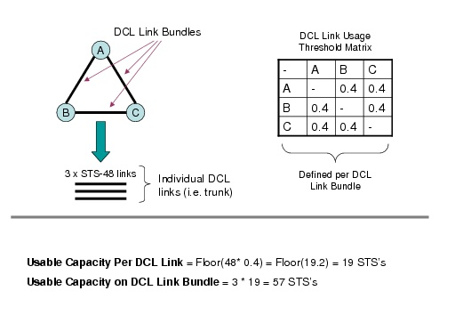
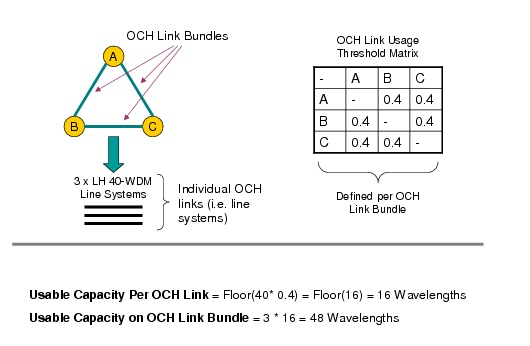
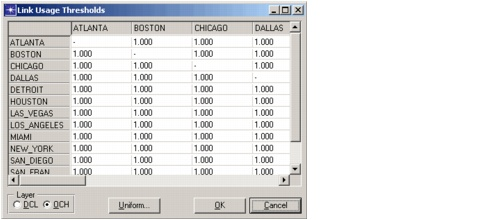

Routing > Link Usage Threshold
Link Usage Threshold
A link usage threshold is a value of any real number between 0 and 1 (i.e., [0.1]) that designates the maximum allowed percentage of utilization for a link. Thus, the capacity usage of a link cannot exceed the link usage threshold defined for a link. For a DCL link, the link usage threshold specifies the percentage of the timeslots that can be utilized. For an OCH link, it specifies the percentage of the available wavelengths that can be utilized.
Given the above definition, consider an STS-192 DCL link. If a usage threshold of 0.5 (i.e., 50%) is specified, the maximum allowed capacity usage of the link is 96 STS's (i.e., 192 * 0.5 = 96). Since capacity usage on a DCL or OCH link must be an integral value, a floor function is applied to the result of the capacity of the link multiplied by the usage threshold. A floor function is used since partial usage of DCL link timeslots or OCH link wavelengths is not permitted. Thus, the maximum capacity usage of a link is derived with the following function:
Floor(Link Usage Threshold * Link Capacity)The floor function rounds down the result of
(Link Usage Threshold * Link Capacity)to the nearest whole integer. Logically, if a usage threshold of 0 is specified, then the link cannot be used to accommodate any traffic. Conversely, for a usage threshold of 1, the entire link capacity can be used for the accommodation of traffic.In SP Guru Transport Planner link usage thresholds are considered to be the same for parallel links, that is, links between the same node pairs. For example, given nodes A and B, all links between A and B would have the same usage threshold value. You can think of this as link thresholds being defined for the entire link bundle between nodes and not for each individual link in the bundle.
Link usage threshold values are defined within SP Guru Transport Planner via a matrix. This matrix defines the link usage threshold values on a per-link-bundle basis for both the DCL and OCH layers.
The following figures illustrate the link usage threshold concept and how it is applied to both the DCL and OCH layers.
Figure 6-14 DCL Layer Usage Threshold Example

Figure 6-15 OCH Layer Usage Threshold Example

In SP Guru Transport Planner the threshold values for the links are set via the Link Usage Thresholds dialog box, as described in Procedure 6-6.
Procedure 6-6 Setting and Using the Link Usage Thresholds
- Open the Link Usage Thresholds dialog box by selecting Network > Link Usage Thresholds from the menu bar or by clicking on the "..." button next to the "Apply link usage threshold" option in Routing, Dimensioning, or Grooming dialog boxes.
Figure 6-16 Link Usage Thresholds Dialog Box

Note—The dialog box is shown with all usage threshold values being 1 (i.e. 100% of the links capacity can be utilized).
- Click on either DCL or OCH Layer radio button to select a layer to edit.
- (Option 1) Edit individual values.
- (Option 2) Set all values to a global threshold.
- Click on the "Uniform" button.
- The "Enter Global Threshold" dialog box displays.
- Enter a value for uniform thresholds.
- Click the OK button to apply the values to all cells.
- Click the OK button to apply and save the values.
The link usage threshold values are persistent, meaning they are saved with the network model in the project files.
End of Procedure 6-6
Besides defining the threshold values for the links in the user interface as described above, you can also import (and export) the link usage thresholds at the DCL and OCH layer. For more information, see Data File Formats.
Note—The link usage thresholds are utilized by a number of design actions within SP Guru Transport Planner, such as routing, dimensioning, and grooming. To make sure that the link usage thresholds are considered by a design action, select the "Apply link usage thresholds" option in the design action dialog box .
| Home © 1987-2007 OPNET Technologies, Inc. All Rights Reserved. This software may be covered by one or more U.S. Patents. See complete patent notice in the Legal Notices section. OPNET Support Center |